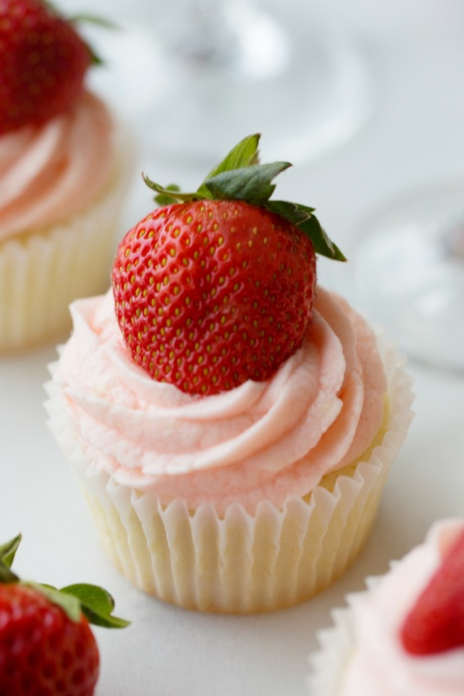

STIRRING UP TROUBLE STRAWBERRIES AND CHAMPAGNE CUPCAKES
I love Valentine’s Day, don’t you? Okay, not really. More, I love the FOODS of Valentine’s Day. I think they’re amazing, sexy, romantic and deserve to be celebrated year round rather than on one measly day per year. Just saying, if I want to gorge on chocolate covered strawberries on a Tuesday in the middle of June, I shouldn’t have to worry about the guy at the supermarket raising his eyebrow at me. These Strawberry and Champagne Cupcakes are another. Sometimes I just want that strawberries and champagne taste in the middle of the day, after I’ve come back from my Mommy and Me Gymboree class. I mean, why should I have to wait around for my fella to bring these home to me when I can literally have them (and enjoy them) whenever I want. All I’m saying is for me Valentine’s Day is whenever I dang well please, and these are how I plan to celebrate. Enjoy!
